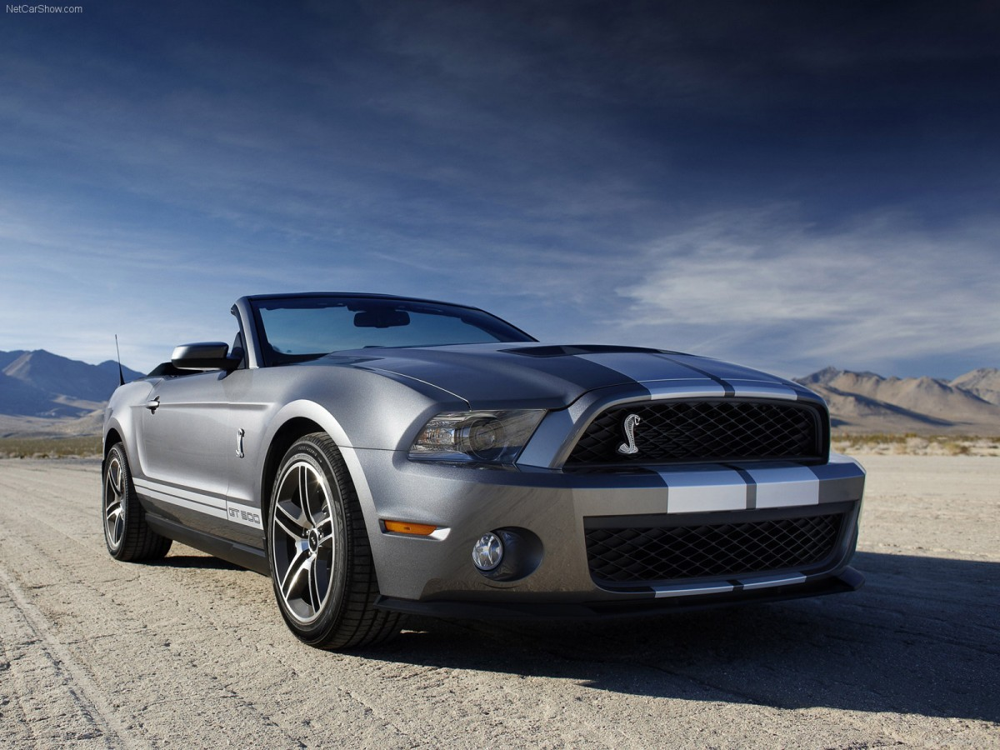
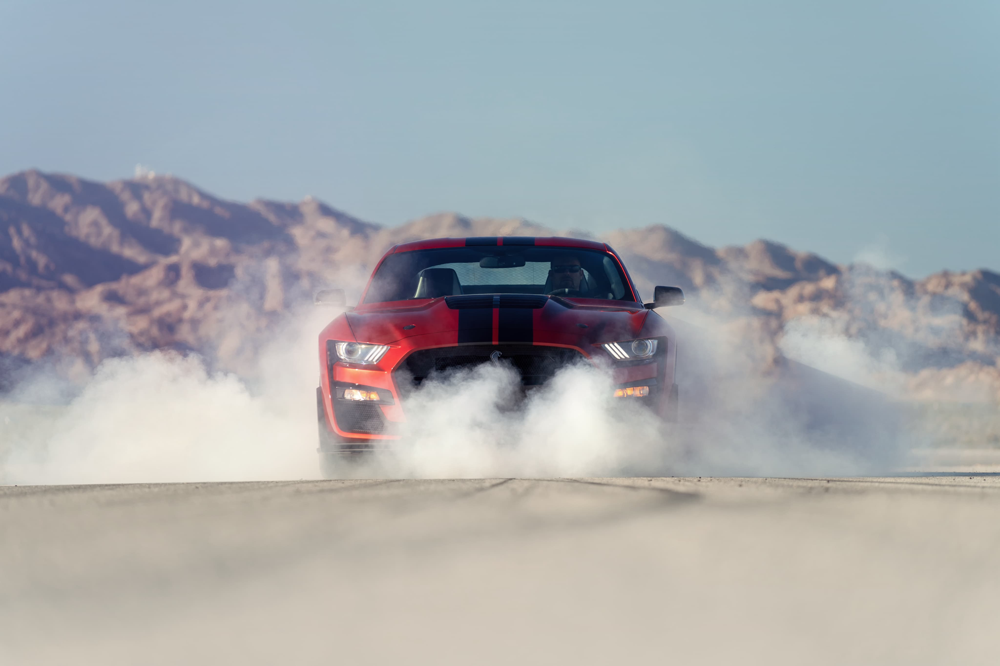
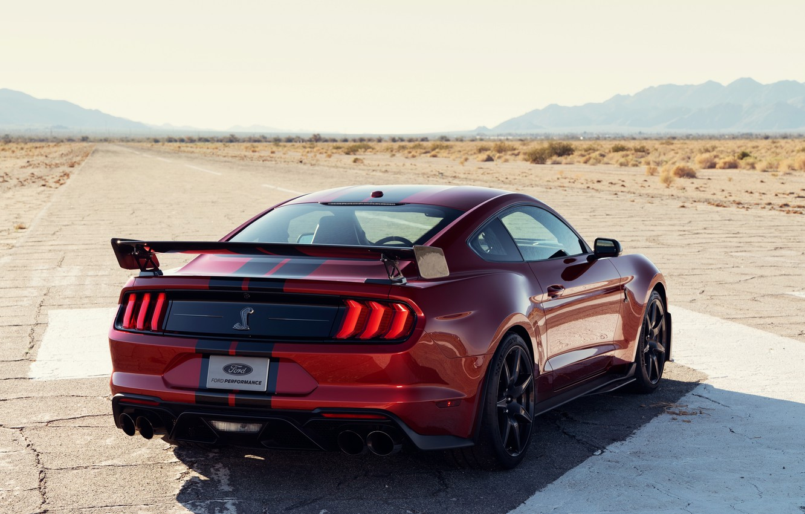

Ford Mustang Shelby GT500
Краткие характеристики
До 100 км/ч: 3.7 сек
Вес: 1916 кг
Мощность: 771 л.с.
МАксимальная скорость: 290 км/ч
До сих пор это звание носил среднемоторный суперкар Ford GT, но теперь ему пришлось потесниться. Представленное на автосалоне в Детройте купе Ford Mustang Shelby GT500 мощнее и призвано дать бой самым экстремальным версиям пони-каров Chevrolet Camaro и Dodge Challenger.
Это всего лишь третье поколение спорткара с индексом GT500: впервые такая модель появилась в 1967 году, и ее разработкой занимался сам Кэрролл Шэлби. Новая же машина не имеет к существующей компании Shelby никакого отношения: легендарное имя использовано по лицензии, а разработкой занималось подразделение Ford Performance.
Для «пятисотого» Мустанга подготовлен двигатель под кодовым именем Predator, в основе которого лежит атмосферник Voodoo, известный по модификации GT350. Агрегат V8 5.2 оснащен приводным нагнетателем типа Roots объемом 2,65 л. Мощность должна превысить 700 «лошадей» (против 655 у модели Ford GT), но точный показатель будет обнародован позже. Динамические показатели пока тоже приблизительные: разгон до 60 миль в час (97 км/ч) занимает около 3,5 с, а четверть мили машина проезжает менее чем за 11 секунд.
А еще версия Shelby GT500 первой среди Мустангов обзавелась преселективным «роботом» с двумя сцеплениями. Коробка передач Tremec имеет семь передач. У ездовой электроники есть пять режимов (normal, slippery, sport, drag и track) и launch control. Механическая трансмиссия не предусмотрена, хотя в компании не исключают, что подготовят такую модификацию, если того пожелают покупатели.
Купе Shelby GT500 имеет индивидуальную настройку подвески с адаптивными амортизаторами MagneRide. Еще одна гордость разработчиков — самые крупные тормозные диски среди американских спорткаров: на передней оси их диаметр достигает 420 мм. Передние тормозные механизмы Brembo — с шестипоршневыми суппортами. Наконец, купе имеет 20-дюймовые колеса с шинами Michelin Pilot Sport 4S.
Все изменения во внешности продиктованы аэродинамикой и необходимостью охлаждения агрегатов. Shelby GT500 имеет шесть радиаторов, поэтому площадь переднего воздухозаборника, по сравнению с версией GT350, увеличена на 50%. Также предложены два пакета опций. Carbon Fiber Track Package — это легкие углепластиковые колеса, иной обвес, шины Pilot Sport Cup 2 и отсутствующие задние сиденья. А Handling Package предусматривает регулируемые верхние опоры передних стоек подвески и иной передний сплиттер.



